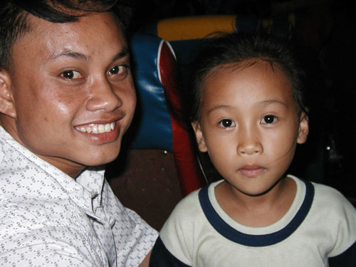

| Savannakhet to Wat Phu
sent 25 June 2003 |
|
| back: Road 2 Savannakhet |
Composite of Doorway at Wat Phu . . . but it gets better. |
Hi Folks,
=================================
Here's the second half of an episode about being flexible while backpacking
overseas. Started an 18-hour trip from Ha Noi, Viet Nam, to Vientiane, Laos,
and arrived 3 days later, after being taken several hundred kilometers further
south. What it meant to my journey was that the decision to try doing south
and north Laos or just North Laos was made for me, as I was delivered to the
South.
Also heard a good rumor about Indonesian visas. They may have delayed the
implementation of the 30-day, $35 visa until August. If this is accurate,
I'll be able to spend 2 months there.
=================================
June 11 - 14, 2003
In the " Road 2 Savannakhet " Trav-E-Log, four travelers left Ha Noi for Vientiane, Laos, but when the bus arrived at the rendezvous location, the companion bus was not there. Either we were too late arriving, or with the general lack of tourists, the other bus was cancelled. No explanations were made; the bus driver just took us 300 km further south without our permission. Then we were put on a private minibus, driven to the border, and then placed on a public bus to Savannakhet. We arrived very tired, very hungry, and very dirty about 5 in the evening. Vientiane was still a 9-hour bus ride away to the north, and we had been traveling almost 24 hours.
Savannakhet is located across the Mekong River from Thailand. The only two guesthouses listed in the Lonely Planet Guide were either dirty, or expensive. After walking around town with full pack for over an hour, I checked in the former, then walked down to the night market just down the street, for dinner. On the way back to the Hotel, a western couple is spotted eating in front of a French restaurant. We start chatting and a powerful storm hits, knocking out all power to the town. The couple will also be heading to Pakse tomorrow, but by boat later in the day.
A quick dash is made back to the hotel when the storm lets up a little, even though the entire town is still in the dark. Just as the bathroom of my room is entered, the power comes back on and I see something pretty amazing: A big, long, black leach extending it's body from a crack in the tile grouting. What kind of diet do you think this creature has, living in the walls, three stories up?
Breakfast is at the French restaurant the following morning. A sign is posted with directions to a tourist info center, which must be checked out next. Buses leave for Pakse at 6:30 AM, 9:00 AM, and 3:00 PM. It's 9:00 AM and my bag isn't packed. Besides, the bus station is 7 KM away. With 5 hours to kill, another walk around town turns up an unlisted guesthouse, clean, and at the same price as the dirty hotel. Lunch consists of a Lao dish containing whipped eggs, chicken, and vegetables in a clear broth.
It's early, but with little to do in town, hiring a tuk-tuk (noisy motorbike converted to three-wheeled taxi) for the bus terminal seems appropriate. Three westerners are sitting together at the terminal, so the obvious thing to do is find out if they have the same destination. They do, and their bus leaves at 1:30, in just 10 minutes. After waking up the clerk at the counter, she tells me only Kip is accepted for payment. Reluctantly, she tells me which way to go for currency exchange. Crossing the street to verify the direction, a shopkeeper points to a jewelry store, and I remember reading that most jewelers will also deal in currencies. After changing $20, my ticket is purchased. The agent is having a bad hair day, but my attempts to cheer her up do not help. It's 1:25, so the four of us hop aboard the waiting bus. Something is wrong, as we are the only ones getting on. One of the others checks with the driver who now says 2:30. I break the news to my new friends from England that the tourist office said 3 PM, which turns out to be accurate.
It's a fairly pleasant trip down on the half-full bus. The road is paved all the way to the northern Pakse bus station, 8 km or so from town center. After the required negotiations in the parking lot, a tuk-tuk takes us to one of the two hotels in town. It's too dirty for us. Management says they have clean guesthouse for just a little more, only 300 meters down a side street. I convince my friends that 300 meters is only about a block, and we check it out. It's much cleaner, and we all decide to stay. Then we all head back to the highway for dinner.
We had planned to eat at a corner restaurant spotted while getting off the tuk-tuk, but now we see an Indian restaurant with lots of Westerners. Not that we always want to associate with Westerners, but we are starved for information about Laos, such as what are the prices you should bargain for, how do you do this, or how do you go to that place. Grabbing a table, we see lots of posters and information about southern Laos. One poster in particular catches my attention: Overnight bus from here (Pakse) all the way to Vientiane. It's a little expensive, but will cut nearly a day off my trip! While finishing my delicious meal, the couple from the French restaurant in Savannakhet show up for a beer and join us. Soon we have about ten of us at the table built for six. Another typical backpacker experience.
Up at 7 the next morning, the three English gals have already left. Arrangements are made to leave my backpack here for the day, only taking a day sack with me. By the time breakfast is finished and I make my way down to the dock for Champasak bound boats, it's almost nine. Not a sole by the Champasak boats, and the two other boats heading downstream want $10 to $15 for passage -- way over my budget. Leaving the dock area helps clears my mind. Will the trip to Wat Phu be scrapped? A micro-van driver pulls up and speaks a few words of English. He will take me to the main market to arrange transportation to Wat Phu Champasak. For $0.70, I hop in for the 10-minute ride . . . into the center of the market parking lot. But think of this as the transportation hub for a wholesale supply center. My driver talks to a few of the truck drivers, and makes what will turn out to be a fantastic selection for me.
|
These trucks, called sawngthaew, are like extended cab mini-pickups, modified with benches placed along either side of the bed for passengers. The tops of the trucks have robust racks for carrying tons on top. Often, the driver will insist your backpack must go on top if your destination is close to the end of his route. A tarp is generally tied around the cargo at the last minute, a clear indication the truck is about to leave. (Rainstorms have resulted in both wet and dry backpack experiences.) This truck in particular is loaded with merchandise from the market: Charcoal, fruit, sacks of rice and sugar, eggs, garlic, coconuts, live stock, and one new refrigerator still in the box. I may be charged a little more than the others, but take an immediate liking to the driver. He lets me ride up front along with 2 children, a college student, a mirror, and a box marked "fragile".
Both the student and the driver speak some English, which is not as common in Laos as it was in Viet Nam. This truck will take me not only to Champasak, but also all the way to the 7th century Wat Phu, some 7 KM the other side of town. After the last delivery is made, the driver continues to the World Heritage Site. In reply to his question about lodging for the night, he offers to wait for me at this remote, desolate site, and arrange for my return to Pakse. I'm ecstatic at the offer, and don't even consider bargaining. Hell, I don't even ask the price!
Wat Phu is not as well preserved as many of the temples in the Siem Reap area (The various temples at Anchor in Cambodia), but neither are there mowed lawns, sidewalks, lighting, and signs everywhere. No vendors, but no transportation. The area has been fenced in, with a museum built at the entrance. The admission fee includes both the museum and ruins. After taking six or seven pictures in the museum, a worker comes up and tells me "No photos". The museum only takes about 15 minutes to complete, after which one starts walking on an ancient walkway towards the obvious ruins of two buildings in the distance. Back out comes the camera. At first I'm surprised at how small the place is, and how much deterioration. Just two temples at the bottom of the hill? I continue up the walkway to the rear, thinking there must be more to this Hindu complex. Up hundreds of stairs, another landing, then more stairs. Now I'm seeing more ruins, much closer to the top of the hill, maybe climbing 500 or more feet in elevation. Sure enough, this is much more interesting up here, with a sacred spring in a cave, large carvings in the rocks, and a temple complete with a (more recent) huge Buddha figure. The stone carvings in each lintel above the doorways definitely remind one of Siem Reap. But the condition of the buildings is really poor, with cracks in the walls so wide you can see through them in several places. Of course, the ceilings are long gone. The area still boasts lots of trees and greenery, which is why the upper complex is somewhat hidden from the plane below. After several hours, I head back down to my waiting driver, buy him and his helper each a bottle of water, and we return to the village of Champasak. |

|
Actually, he drives the truck to his house, passing his "under construction guesthouse" on the way. This man is not your typical, laid-back citizen. He is learning English, works as a truck driver, a motorcycle taxi driver, and is building a guesthouse. That is what I call ambition. It's 3:30 PM, and we negotiate the fee for a motorbike ride all the way back to Pakse, nearly 2 hours away. It will be a very long day for him, as he does the motorbike driving as well. He takes me to the guesthouse where I left my backpack, and there I introduce him to the owner. As arranged, I take a quick shower and change cloths before walking down to the Indian restaurant. There I buy a ticket for the overnight bus to Vientiane, eat another delicious meal, and take a tuk-tuk to the bus station. It's the evening of June 13, 2003. My VIP bus will arrive in Vientiane at 5:15 AM on June 14th. Why all the date specifics?
The Bangkok Post reports that on June 18, bandits bomb the night bus from Pakse to Vientiane, Laos, with one fatality and several injuries. Please don't worry about me, folks, as a lot more people are killed by "Saturday night specials" in Los Angeles every year than in Laos, Viet Nam, and Cambodia combined. And in ten weeks I've only seen one traffic accident!
Enjoy!
Bill
------------------------------
Email me at the juno.com address "dancer2SEAsia"
"Travel is Fatal to Bigotry, Prejudice, and Narrow-minded ness" .... attributed to Mark Twain